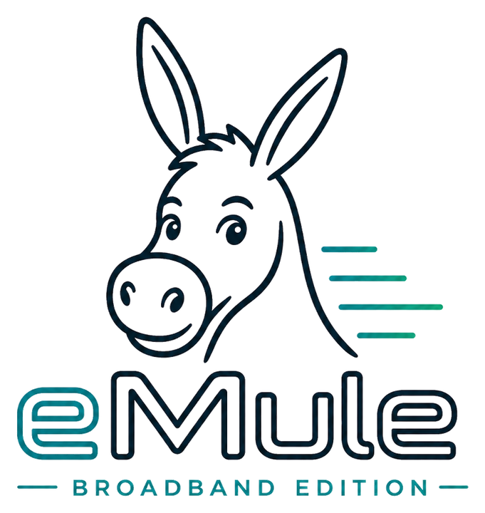
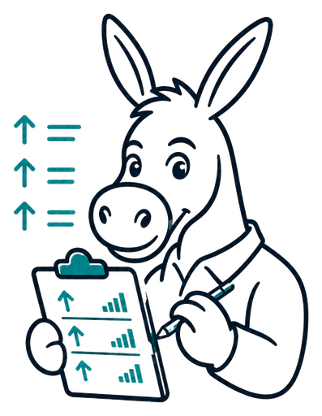
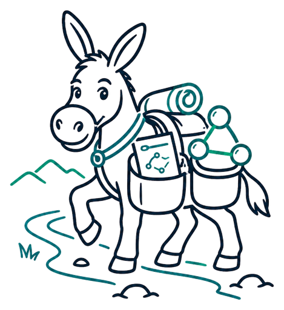
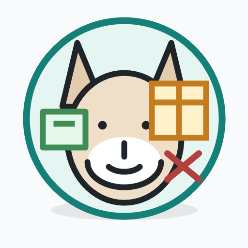

Rust nightly beta channel
CI-gated nightlies from main are the current public testing builds for Windows, Linux, and macOS.

Two public eD2K/Kad client lanes
emulebb-rust is in beta. CI-gated nightly builds from main are the current public testing channel. eMuleBB MFC 0.7.3 remains the stable Windows release.
Public download channels
Rust nightlies are CI-gated builds from main. Development is best-effort and spare-time, and contributors are welcome. MFC 0.7.3 remains the stable Windows release.
irm https://emulebb.github.io/install.ps1 | iexThe one-line installer is retained for the shipped MFC 0.7.3 suite artifact; it is not an active cross-client roadmap.
eMuleBB now has two clear public entry points: the Rust nightly beta channel and the stable MFC 0.7.x Windows client. Rust development happens when maintainer time allows, and contributors are very welcome. Other repositories are supporting harnesses, reference forks, paused experiments, or release history—not additional active products.
Lifecycle
CI-gated nightlies from main are the current public testing builds for Windows, Linux, and macOS.
The published 0.7.3 Windows client continues as a long-term 0.7.x maintenance line for bugs and bounded low-risk changes.
Rust development is best-effort and spare-time. Read the contributing guide to help with code, tests, documentation, or validation.
Stable MFC capabilities
These are shipped 0.7.3 capabilities, not a promise of renewed broad MFC development. Maintenance remains compatibility- and risk-bounded.
eMuleBB conserva el flux clàssic d'eMule i hi afegeix límits explícits, diagnòstic i una API REST autenticada.
Un eMule per a uploads ràpids, biblioteques compartides grans, sessions llargues de Windows i control local.
Automatització REST sense substituir l'aplicació d'escriptori. /api/v1, JSON, X-API-Key.
Control clar d'upload i xarxa
Mantenir eD2K i Kad pràctics
Evidència abans dels paquets públics
Docs
Use the current nightly prereleases for beta testing, verify SHA256SUMS, and report reproducible issues in emulebb-rust.
The project advances when maintainer and contributor time allows. The contributing guide covers code, tests, documentation, and validation.
Version 0.7.3 remains the supported stable package while 0.7.x receives maintenance fixes.
The stable MFC client retains its authenticated /api/v1 automation surface. Controller forks and qBittorrent-compatible experiments are not forward product priorities.
Oficis interns del projecte, amb humor controlat.

01Control clar d'upload i xarxa

02Mantenir eD2K i Kad pràctics

03Evidència abans dels paquets públics
Published releases
CI-passed main commits publish immutable nightly prereleases with native packages, SHA256SUMS, provenance attestations, and a retained history of the newest 14 builds.
The stable Windows package remains published with manifests, hashes, SBOMs, and diagnostics assets.
The MFC 0.7.3 release keeps its suite installer and aMuTorrent artifact. “Suite” describes that shipped bundle, not an active umbrella roadmap.
Capabilities, platform support, and network-safety claims must be proven by the repository and release that owns them.
Repos